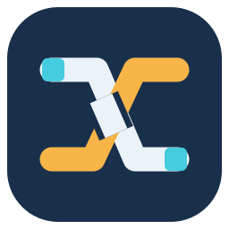
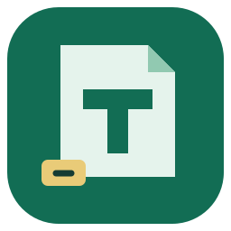
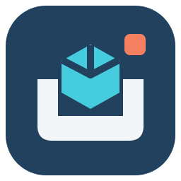

 CaseWeave测织 把测试点、子任务与不同平台连接起来。“织”也对应同一测试点的多重归属。 交织的两条路径，起点与终点各是一块测试数据。偏向完整出题工作流。 16 / 32 / 48 px 与深色背景预览
 TaskMint题铸 从题目想法到可交付的成品题包。“Mint”强调制作、校验和生成。 一页折角题目、一枚压印，以及清晰的 T。偏向出题与内容生产。 16 / 32 / 48 px 与深色背景预览
 TestDock测港 不同来源的题包在这里整理、重造、恢复，再发送到目标评测平台。 一枚数据方块进入开放的停靠口。偏向兼容模式与平台互通。 16 / 32 / 48 px 与深色背景预览